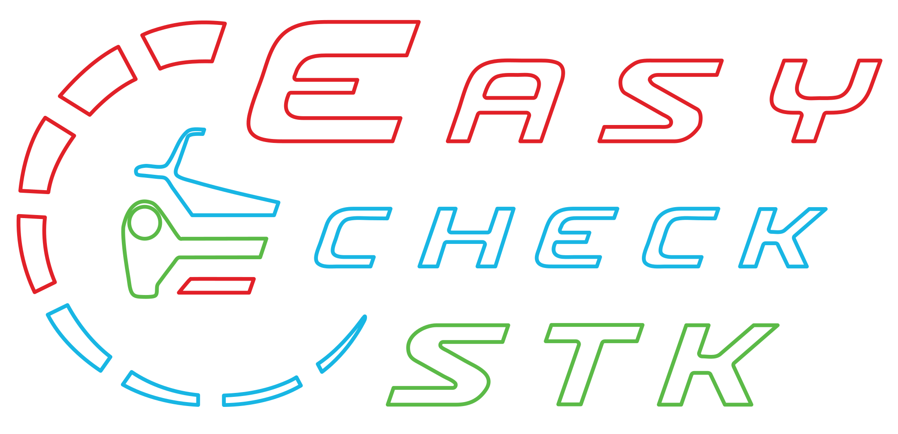
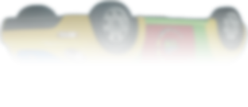
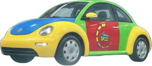

Easy Check — stanica technickej kontroly Trnava: STK, emisná kontrola, kontrola originality a tachografy

Služby
Cenník
Info
Kontakt
Blog


Kontroly
STK
EK
KO
TACHO
ADR
CEMT
STK
EK
KO
TACHO
ADR
CEMT
Prehlásenie vozidiel
Razenie VIN
Evidencia vozidiel
Prehlásenie vozidiel
Razenie VIN
Evidencia vozidiel
Otvorené
Po–Pia
07:00–19:00
Sobota
07:00–13:00
aj sviatky
Farárske 27
Trnava
Zobraziť na mape →
033 20 20 211
‹
›
Služby
Cenník
Info
Kontakt
Blog
Najlepšie hodnotená STK
na Slovensku.
G
o
o
g
l
e
4,9 ★★★★★
+
5708
recenzií
ONLINE OBJEDNÁVKA
‹
›
▲
‹
Vyber si vozidlo
›
Klikni pre výber